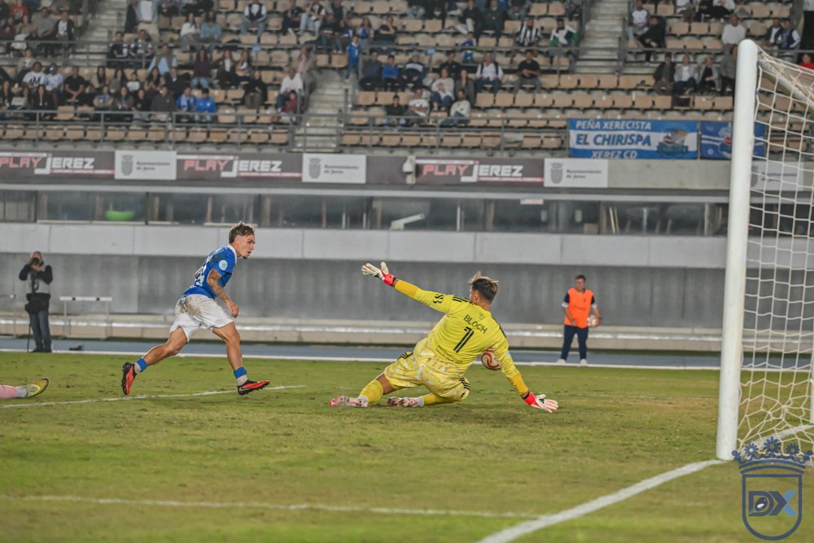

Un cañonazo de Ismael saca al Xerez del descenso ante el Marbella (1-0)
El Xerez CD venció 1-0 al Marbella en Chapín con un golazo desde fuera del área de Ismael, que había entrado tras el descanso, en el minuto 62. Los azulinos superaron a un rival directo que los incomodó en el primer tiempo con una defensa adelantada y una presión alta. Con el triunfo salen del descenso directo y llegan con la moral reforzada a la Copa del Rey ante el Cádiz.
Un solo cambio en el once
Abel Segovia apostó por la continuidad tras la derrota ante el Ciudad de Lucena. Era el segundo de tres partidos seguidos en Chapín, contando la eliminatoria de Copa del Rey del miércoles ante el Cádiz. Solo cambió a un jugador: Fali, con el brazalete de capitán, entró en el centro de la defensa junto a Manu Galán en lugar de Moi. Pantoja repitió en la portería, con Guille Campos y Chacartegui en los laterales y los sub-23 Raúl López y Peregrina en el medio. Jaime Fernández y Zequi ocuparon las bandas, Julito la mediapunta y Chuma la punta. Antonio Calderón formó con un 4-4-2.
El Marbella sorprende con su presión
El Xerez salió con intención y Chuma probó fortuna en el minuto 2, pero el Marbella sorprendió pronto con una defensa muy adelantada y una presión alta que dificultaba la salida del balón del equipo xerecista. Aun así, los azulinos encontraron huecos: en el 12', Julito cabeceó un centro de Zequi y Bloch detuvo el remate.
Con el paso de los minutos, los de Calderón se estiraron. Fali despejó dos centros seguidos en el 20' y Pantoja mandó a córner un disparo cruzado de Wudu en el 25'. El Marbella perdió por lesión a Naldo en el 22', sustituido por Marcos.
Dos jugadas protestadas
La grada protestó dos acciones en el área visitante: un empujón a Zequi en el 34', que los aficionados reclamaron como penalti, y un pisotón de Wudu a Raúl López en el 38'. Guille Campos rozó el gol con un disparo desde la frontal antes del descanso, al que se llegó sin goles.
Ismael cambia el partido
Segovia movió el banquillo en el descanso: entró Ismael por Jaime Fernández, Julito pasó a la banda y Peregrina adelantó su posición. En el 49', Peregrina se quedó solo ante Bloch, que repelió el disparo con el pecho. Cristóbal respondió con un tiro desde la frontal que atajó Pantoja (55').

Foto: Diario XerecistaEn el minuto 62 llegó el premio. Ismael soltó un disparo desde fuera del área que entró junto a la base del palo derecho: 1-0. Cuatro minutos después, Fali se marchó lesionado entre la ovación de la grada, que coreó su nombre. Zequi perdonó el segundo en el 69' tras un pase atrás de Peregrina, e Ismael rozó el doblete en el 79'.
El Marbella apretó en el tramo final y estuvo cerca del empate en el 89' con un remate de Mizzian a balón parado. También reclamó una mano de Guille Campos. El Xerez sufrió hasta el final, pero sumó tres puntos vitales.
Ficha técnica
Xerez CD: Pantoja, Guille Campos, Fali (Moi, 65'), Manu Galán, Chacartegui, Raúl López, Peregrina, Jaime Fernández (Ismael, 46'), Julito, Zequi Díaz (Óscar Lorenzo, 82') y Chuma (Rubén Mesa, 89').
Marbella FC: Florentin Bloch, Lanchi (Santos, 74'), Naldo (Marcos, 22'), Juan Rodríguez, Dani, Víctor Mena (Fernando, 46'), Cristóbal (Adri, 74'), Ohemeng, Juanma, A. Wudu y Pito (Mizzian, 60').
Gol: 1-0 (62') Ismael.
Árbitro: Enrique Pareja Nieto (Jaén). Amonestó a Chacartegui y Guille Campos, por parte del Xerez CD, y a Víctor Mena, Dani y Fernando, por parte del Marbella FC.
Incidencias: partido de la octava jornada del Grupo 4 de Segunda RFEF, disputado en Chapín ante 7.222 espectadores.
🇬🇧 Read in English ← Volver a la portada